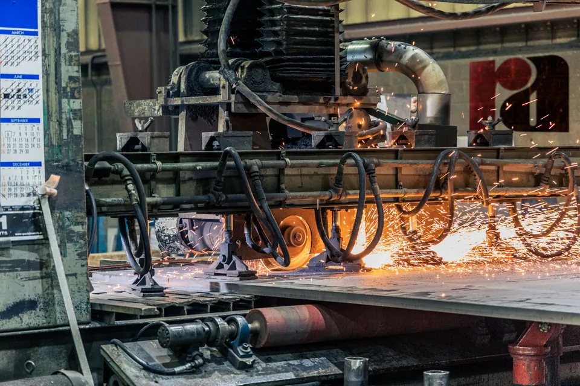

01
Painting Co.
Franchise Resale
Mecklenburg County, NC
$137,500Asking price
An established painting business. $352,757 in annual sales. Seller-reported cash flow of $66,392.
THE KINGDOMHAUS PERSPECTIVE
Every acquisition begins with a story. KingdomHaus Intelligence helps you look beyond the asking price to understand the financial performance, operating realities, and unanswered questions behind the opportunity.
Analyzer currently unavailable.
Mecklenburg County, NC
An established painting business. $352,757 in annual sales. Seller-reported cash flow of $66,392.
Mecklenburg County, NC
FINANCIAL INTELLIGENCE
Seller-reported figures · EBITDA not disclosed
A mobile business still needs a viable management transition.
FROM OPPORTUNITY TO UNDERSTANDING
The Deal Scanner gathers and organizes available listing information, uses rule-based checks to screen financial and operational considerations, and highlights missing information.
Listing details or your own notes
Findings. Questions. Next steps.
EXPERIENCE THE INTELLIGENCE
A first look at the economics, the operating realities, and the questions worth asking next.
Explore two acquisition structuresAdvertised cash flow is not verified SDE. EBITDA is not disclosed.
Investigate · Screening view
Questions to verify
Analyzer currently unavailable.
KINGDOMHAUS
KingdomHaus Intelligence brings structure to acquisition review—helping you organize seller-reported information, examine what is disclosed, and focus on the questions that matter before deeper diligence begins.
The Deal Analyzer helps connect disclosed financial information, ownership responsibilities, operating dependencies, and diligence questions behind a listing. Financial metrics use rule-based calculations; AI-assisted interpretation is a separate, optional step.
The $1,240,000 combined asking price comprises a $565,000 business and $675,000 included real estate. Included assets are not added again.
Seller-reported SDE is $227,261, not verified earnings or post-acquisition cash remaining.
INTELLIGENCE FOR EVERY STAGE
From the first listing to the questions that shape an acquisition decision, KingdomHaus brings essential information into focus.
Use the rule-based Deal Scanner to organize disclosed listing details and highlight gaps.

See asking prices, reported earnings, and transaction components in context.
Combined transaction
Optional AI-supported analysis that examines the financial, operational, and ownership considerations behind an acquisition.
Specialty Manufacturing: transaction structure, equipment continuity, and management dependence.
Explore AI IntelligenceInvestigate and verify equipment, ownership responsibilities, and transaction terms before an acquisition decision.
Included FF&E does not establish condition, maintenance history, remaining life, or lien status. Request an asset schedule and inspection.
Verify the included property and asset schedules, title, and the owner's operating responsibilities. No undisclosed costs or management coverage are assumed.
Examine the ownership costs behind advertised SDE before estimating what may remain.
Advertised SDE is not post-acquisition cash remaining.
Verify the transaction structure, owner responsibilities, and operating capital requirements before modeling ownership cash flow.
No financing or replacement-cost assumptions are made.Bring preliminary findings together in a structured acquisition review.
& Real Estate
Acquisition review
Transaction structure · Equipment continuity
Structured findings, ready for the next conversation.
THE KINGDOMHAUS DIFFERENCE
A business listing is the beginning of the conversation—not the conclusion. KingdomHaus organizes what is available and makes the next questions easier to identify.
Central North Carolina
A specialty manufacturer of industrial equipment accessories. The advertised $1,240,000 transaction includes the business and owned real estate.
Seller-reported SDE is $227,261. Inventory and FF&E are included; their individual values are not disclosed.
Central North Carolina
Real estate, inventory, and FF&E are included. No included asset is added to the total again.
Equipment continuity & liens
Management responsibilities
Selected questions, not a complete diligence report.Before: a combined asking price and seller claims, with transaction questions still open.
The difference isn't more information.
It's a better way to understand it.
DISCIPLINE BEFORE DECISION
KingdomHaus Intelligence is designed around a simple principle: informed acquisition decisions require more than attractive financial headlines.
Distinguish reported information from what has been independently verified.
Understand the people, systems, and responsibilities required to keep a business performing.
Consider what ownership may require beyond advertised financial results.
YOUR NEXT OPPORTUNITY STARTS HERE
Bring greater clarity to your next business acquisition with KingdomHaus Intelligence.
Analyzer currently unavailable.